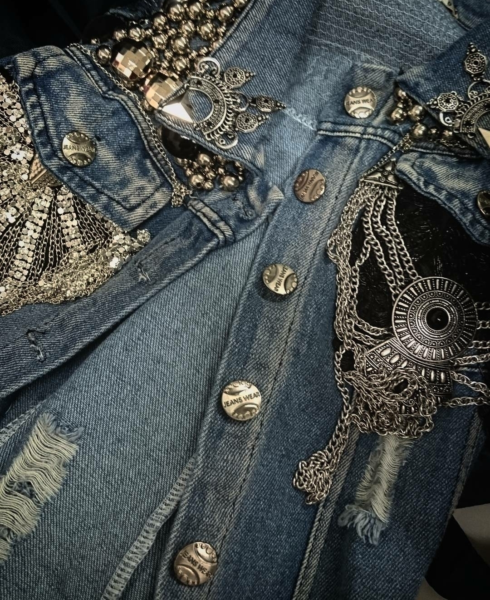
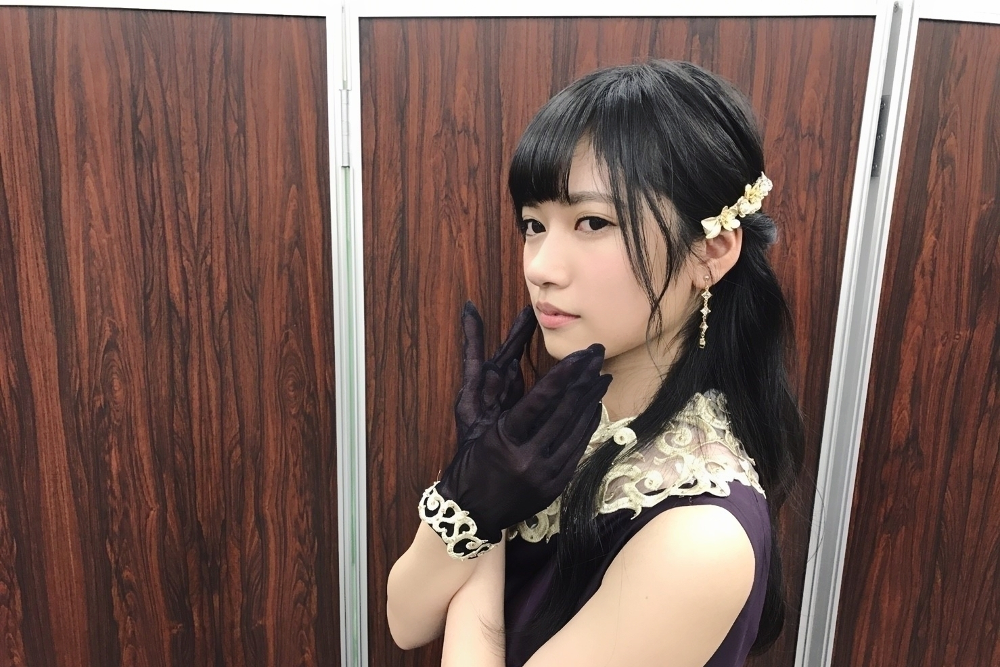

2016/1231Satバーニャカウダの作り方
宙組さんの次期トップ娘役さんが、、、
宝塚歌劇団さんを好きになってから初めての経験の為
不思議な気持ちです
でも、柔軟にとの事なので
今後どうなるのか
ドキドキワクワク
これからも新生宙組さんに
目が離せません
今年も1年お疲れ様です
おはようございます
こんにちは
こんばんは
寺田蘭世です(..)✨
今年は、、、
14枚目シングルからスタートしたのかな。
アンダー楽曲は不等号
中元さんがセンターでそのお隣に居ました。
一昨年に初めてのアンダーでフロントを経験して
そこからは己次第と言う場に置かれましたが
我武者羅に
でも、楽しみ感謝を忘れず
食らいついていました。
アンダーライブ全国ツアーの始まりとなった
東北地方には捻挫の為参加出来ませんでした。
やっぱりそれはでかかったかも知れませんね
でも、そのお陰で視野が広がったしライブに対しての見方捉え方も変わりました。
だから、結果的に
これからもっと大きくなる為の材料を沢山揃えた期間になりました。
15枚目夏、、、
夏はインタビューでも
色々言ってきましたが
乃木坂46に加入してから
1番くらいに悔しいと言う感情が大きかったです。
果たして、自分って何なんだろう。
いつも耐えてきたけど
もう無理かも
壊れるかもって
弱音を吐きそうになった期間でした。
でも、それがあったから
メンバーに支えて貰えたし
皆が寺田蘭世をどう思ってるか聞けました。
自分で自分をちゃんと
見る事って難しいから
みんなの意見は凄く貴重でした。
もう、次駄目だったら
考えるべきなのかと、、、
そのくらい
思い詰めていましたが
今年の夏は私に試練を与えてくれました。
だからこそ真夏の全国ツアーは1曲1曲全力で取り組めました。
16枚目シングル秋冬、、、
アンダー楽曲は『ブランコ』センターを務めさせて頂きました。
言葉にしようとしても
思いつかなくて
ちゃんと自覚もあります
でも、言葉には出来なくて
今年1年、、、
その前からの
私の行った1つ1つの行動を
見てくれてる人は居たんだって
そして、それらの行動は
正しい道だったんだって
認められたんだなって
だから、どうこう言う前に
何事も行動で示すべし！
だなと思いました。
これからも
自分、不器用ですが
己を信じて
周りに居て下さる
支えてくれる人達を信じて頑張りますので
宜しくお願い致します！

武道館でのLIVEは
また振り返ると
自分とんでもない事をさせてもらえたなって
寺田蘭世年表を
作るに当たって
今年、2016年はとても
濃ゆい1年だったと思います！
●◎△―！※、、◎↑ ！
スタッフさんに宝塚歌劇団風ポーズでとポーズ指定
指先まで意識してみました、、、(> <)

今年最後の活動は
紅白歌合戦でした✨
どれだけ凄いことか、、、
今年はちゃんと噛みしめて
パフォーマンス出来ました
前にメンバーが居なくて
先頭で紅白歌合戦を経験できるって当たり前な事でなくこれもまた凄く貴重でした
最後も楽しく終えれました
かりんちゃんブログの
流行語なんだか
私関連の単語が
・らんぜの勢い止まらんぜ
・よきかなー
・蘭蘭蘭世
この3つで票が分散してたらしいです、、、
蘭蘭蘭世と言えば
紅白歌合戦で乃木坂46の前が前前前世を歌ってるRADWIMPSさんでした！
舞台袖で拝見しておりました！
蘭蘭蘭世って単語は
らじらーさんに出演したときオリラジさんが言ってくれたのが確か始まりでした！
RADIO FISHさんの
パフォーマンスも
出演終了後画面越しに
見てました(..)✨
今年最後に
プレゼントとファンレターを頂きました！
その日にモバメでも嬉しさのあまり連絡しましたが
誰かの励みになれてるって
本当に嬉しい
アイドルになって良かったなって思えます。
プレゼントも選んでくれた時間とかそこまでの過程を含め全部嬉しいです✨
さっきも書きましたが
本当に自分でも
吃驚するくらい不器用だからどう伝えれば
私喜んでますって
伝わるのか分からないけど
今の私は
嬉しい気持ちでいっぱいですよ。
これからもこんな私ですが
宜しくお願い致します！
来年2017年は一緒に
もっともっと頑張ろうね！
2016/12/31 寺田蘭世
2016/12/31 23:24
コメント(695)
あけおめ！！！
あけおめ！今年もよろしくね！笑
らんらんらんぜ
寺田蘭世とてもよきかな
あけおめー！
ブログありがと！
良い一年にするね！
良い一年にするね！
今年もよろしく！！
蘭世あけおめ！
あけおめ！今年もがんばろ！
すき！
蘭世紅白おつかれさま
あけおめ、
まだ頑張るどん
あけおめ
やっぱり題名気になる。
らんぜ！紅白よかったよ！！^ ^
おはようございます
こんにちは
こんばんは
そして、
明けましておめでとうございます
蘭世ちゃんあけおめ！
2016年はありがとう。蘭世ちゃんのおかげで楽しい一年になりました。学校が大変な時も蘭世ちゃんからパワーをもらって乗り切った一年でした。
そして、2017年。一月は握手会、二月は握手会&バスラといった、好スタートです。もちろん蘭世ちゃんに会いに行く、観に行くためです。大学生は一月いっぱいはテストだから、握手会で元気やる気を貰いながら、二月を楽しみに全力で乗り越えます。
(¨)←しょうきおすすめの顔文字です！今年は下を向いてないで、そろそろ上を向いてみてはどうでしょう？
きっと2017年は蘭世ちゃんが今まで以上に躍進する年になると信じています。だから、上を向いて、夢に向かって頑張ってね。
2017年も微力ながら応援させてもらいます。2017年も大好きです。2017年もよろしくね。一緒に頑張ろう！
蘭世ちゃんにとってよい一年になりますように。
こんにちは
こんばんは
そして、
明けましておめでとうございます
蘭世ちゃんあけおめ！
2016年はありがとう。蘭世ちゃんのおかげで楽しい一年になりました。学校が大変な時も蘭世ちゃんからパワーをもらって乗り切った一年でした。
そして、2017年。一月は握手会、二月は握手会&バスラといった、好スタートです。もちろん蘭世ちゃんに会いに行く、観に行くためです。大学生は一月いっぱいはテストだから、握手会で元気やる気を貰いながら、二月を楽しみに全力で乗り越えます。
(¨)←しょうきおすすめの顔文字です！今年は下を向いてないで、そろそろ上を向いてみてはどうでしょう？
きっと2017年は蘭世ちゃんが今まで以上に躍進する年になると信じています。だから、上を向いて、夢に向かって頑張ってね。
2017年も微力ながら応援させてもらいます。2017年も大好きです。2017年もよろしくね。一緒に頑張ろう！
蘭世ちゃんにとってよい一年になりますように。
おお！！蘭世！！あけましておめでとう！！
2017年も蘭世の勢いとまらんぜ！！
2017年も蘭世の勢いとまらんぜ！！
蘭世あけましておめでとう！
好き！
あけましておめでとう！
今年も蘭世のこと応援します！
今年も蘭世のこと応援します！
らんぜあけおめ！らんぜにとって飛躍の一年になるように！
蘭世あけおめーー！
一月には個握行くからまっててね！！
一月には個握行くからまっててね！！
あけましておめでとうございます
あけましておめでとうございます!!
2017年もいっぱい蘭世に会いに行きます!!
2017年もいっぱい蘭世に会いに行きます!!
あけおめ〜
あけましておめでとう！
今年はいろいろ変わりそうな年だね
今年もよろしくお願いします。
KEEP SMILE
今年はいろいろ変わりそうな年だね
今年もよろしくお願いします。
KEEP SMILE
蘭世こんばんは！
あけましておめでとうございます
今年も宜しくお願いします
今年は蘭世の更なる躍進に期待
あけましておめでとうございます
今年も宜しくお願いします
今年は蘭世の更なる躍進に期待
蘭世大好き〜
2017年頑張って行こうね〜
2017年頑張って行こうね〜
蘭世あけおめ！！
去年は蘭世が凄い成長していくのがリアルタイムで観れた気がしたよ！！
本当に選抜のセンターになる人だと僕は思う！！！
2017年蘭世が選抜、そして選抜のセンターに立って輝いてる姿を見るためにこれからもずっと応援してます！
蘭世大好きです！
去年は蘭世が凄い成長していくのがリアルタイムで観れた気がしたよ！！
本当に選抜のセンターになる人だと僕は思う！！！
2017年蘭世が選抜、そして選抜のセンターに立って輝いてる姿を見るためにこれからもずっと応援してます！
蘭世大好きです！
蘭世〜‼︎
あけましておめでとう〜‼︎
2016年は蘭世にとって充実した1年になったかな⁇
2017年はさらなる高みへ進めるように頑張ってね‼︎俺も全力で応援するから‼︎
今年もよろしみなさんお願いします‼︎
京都の握手会楽しみ‼︎✨
あけましておめでとう〜‼︎
2016年は蘭世にとって充実した1年になったかな⁇
2017年はさらなる高みへ進めるように頑張ってね‼︎俺も全力で応援するから‼︎
今年もよろしみなさんお願いします‼︎
京都の握手会楽しみ‼︎✨
らんぜ愛が止まらんぜー！
あけましておめでとう！
紅白ちゃんと見てましたよ！蘭世かっこよかった‼︎
今年も自分らしく頑張ってください！
私も全力でついていきます‼︎
あけましておめでとう！
紅白ちゃんと見てましたよ！蘭世かっこよかった‼︎
今年も自分らしく頑張ってください！
私も全力でついていきます‼︎
蘭世ちゃん！
あけましておめでとうございます 、
今年もよろしくお願い致します (..)
2017年も蘭世ちゃんが1番大好きですー！
あけましておめでとうございます 、
今年もよろしくお願い致します (..)
2017年も蘭世ちゃんが1番大好きですー！
蘭世ブログ更新お疲れ様！
紅白蘭世しか、みてなかったよ！
今年初めて蘭世の握手会に参加して
顔の小ささと圧倒的可愛さにビビりました笑
これからも推しまくります！
今年も1年頑張りましょう！！！
紅白蘭世しか、みてなかったよ！
今年初めて蘭世の握手会に参加して
顔の小ささと圧倒的可愛さにビビりました笑
これからも推しまくります！
今年も1年頑張りましょう！！！
今年もよろしくお願いします。
こんな僕だけどまとめで話す時は
考えてることを話すわけだし
いつだって緊張するし。
蘭世も毎回真面目にきいて
返してくれるから助かるよ。
17年たのしもうね！！！！！
蘭世さんブログ更新ありがとう！！
紅白しっかり見ましたよ！！
今年の蘭世さんの活躍を楽しみにしています！！
17枚目の握手会で会いましょう！！
紅白しっかり見ましたよ！！
今年の蘭世さんの活躍を楽しみにしています！！
17枚目の握手会で会いましょう！！
蘭世！あけましておめでとう！
今年も全力で応援します！
色々と蘭世の中で葛藤もあると思う。
みんなで乗り越えていこ！
今年も全力で応援します！
色々と蘭世の中で葛藤もあると思う。
みんなで乗り越えていこ！
明けましておめでとうございます！
2016年は蘭世さんにとって飛躍の年になったんじゃないかなと思います。
2017年を更なる飛躍の年にしていきましょう！！
らんぜの勢いとまらんぜ〜(´-ω-｀)
2016年は蘭世さんにとって飛躍の年になったんじゃないかなと思います。
2017年を更なる飛躍の年にしていきましょう！！
らんぜの勢いとまらんぜ〜(´-ω-｀)
蘭世！あけましておめでとうございます！
去年は色々なことがありましたね。
ポジションについて、色々考えることはあると思うけど、徐々に上がっていけばいいと思います。最終的に頂点に辿り着くなら、急でもゆるやかでも、同じです。
今年も、ゆっくり、感謝の気持ち忘れずに頑張っていきましょうね。
それでは、今年もよろしくおねがいします！！(^^)(^^)
握手会行くよ〜( ¨̮ )( ¨̮ )
一生蘭世推しのゆうたより
去年は色々なことがありましたね。
ポジションについて、色々考えることはあると思うけど、徐々に上がっていけばいいと思います。最終的に頂点に辿り着くなら、急でもゆるやかでも、同じです。
今年も、ゆっくり、感謝の気持ち忘れずに頑張っていきましょうね。
それでは、今年もよろしくおねがいします！！(^^)(^^)
握手会行くよ〜( ¨̮ )( ¨̮ )
一生蘭世推しのゆうたより
らんぜ~
あけおめ！！2016年はいろいろありましたね！私も中学2年生という中堅学年で、すごく濃かった1年でした！
2017年も変わらずらんぜ、乃木坂46を応援します！
だいすき！！紅白もばっちり見ました
あけおめ！！2016年はいろいろありましたね！私も中学2年生という中堅学年で、すごく濃かった1年でした！
2017年も変わらずらんぜ、乃木坂46を応援します！
だいすき！！紅白もばっちり見ました
ブログ更新ありがとう！
あけおめです！
モバメで言ってた顔文字について…笑
蘭世もsimeji使ってるのかな？
僕はよく( ˙-˙ )←まがお (´艸`)←ふふふ を使うよ！
まずは紅白お疲れ様！
ちゃんと映ってたよ！可愛かった！
2016年は本当に色々あったよね
ずっとアンダーフロントにいて最後はセンターにまで辿り詰めて、ライブで輝く蘭世を見れて幸せでした！
2017年はもっともっと蘭世の勢いとまらんぜにしてほしいな！！
今年もよろしくお願いします！
また更新お願いします！
あけおめです！
モバメで言ってた顔文字について…笑
蘭世もsimeji使ってるのかな？
僕はよく( ˙-˙ )←まがお (´艸`)←ふふふ を使うよ！
まずは紅白お疲れ様！
ちゃんと映ってたよ！可愛かった！
2016年は本当に色々あったよね
ずっとアンダーフロントにいて最後はセンターにまで辿り詰めて、ライブで輝く蘭世を見れて幸せでした！
2017年はもっともっと蘭世の勢いとまらんぜにしてほしいな！！
今年もよろしくお願いします！
また更新お願いします！
らんぜ！あけおめ♡
紅白でらんぜのことすごい探して見てた♡
22日の個別握手会いくから楽しみにしてるね♡
あとあと、バスラ当選しました♡何と三日目なの！ボーダー聞ける！
今年もよろしくね♡がんばってください！
紅白でらんぜのことすごい探して見てた♡
22日の個別握手会いくから楽しみにしてるね♡
あとあと、バスラ当選しました♡何と三日目なの！ボーダー聞ける！
今年もよろしくね♡がんばってください！
らんぜ更新ありがと～
新年あけましておめでとう！
2016年らんぜはアンダーセンター
まで登りつめたんだから
2017年は選抜入りするの期待してるよ！
サンエトでの活動が増えるのも
願ってる
今年も頑張ってね
今年もよろしく～
新年あけましておめでとう！
2016年らんぜはアンダーセンター
まで登りつめたんだから
2017年は選抜入りするの期待してるよ！
サンエトでの活動が増えるのも
願ってる
今年も頑張ってね
今年もよろしく～
蘭世ー、あけおめー！ことよろ！
2017年も一緒に坂 上ろうぜ
あけましておめでとうございます！
蘭世ちゃんは2017年どんな年にしたいかな？
俺は2016年たくさん蘭世ちゃんに笑顔を貰ったから
2017年では恩返しの様なことをしたいかな！
今年もよろしくね！
京都のシロクマあつき
蘭世ちゃんは2017年どんな年にしたいかな？
俺は2016年たくさん蘭世ちゃんに笑顔を貰ったから
2017年では恩返しの様なことをしたいかな！
今年もよろしくね！
京都のシロクマあつき
たまらんぜ
あけおめ
ことよろ〜
握手会行くからね〜
あけおめ
ことよろ〜
握手会行くからね〜
蘭世〜！ブログ更新ありがとう！
あと、これを書いてるのは2017年なので、
明けましておめでとうございます！
紅白歌合戦お疲れ様！そして、優勝おめでとう！
昨年はアンダーセンターになったり、蘭世にとっては
本当に濃い1年だったね！今年も皆で坂を登っていこ！！
応援してます！長くなってごめんね〜笑
あと、これを書いてるのは2017年なので、
明けましておめでとうございます！
紅白歌合戦お疲れ様！そして、優勝おめでとう！
昨年はアンダーセンターになったり、蘭世にとっては
本当に濃い1年だったね！今年も皆で坂を登っていこ！！
応援してます！長くなってごめんね〜笑
こんばんは
明けましておめでとうございます。
2017年もよろしくお願いいたします。
2016年は色々あったなーって思います
自分は中国地方のアンダーライブに行って泣きながらライブを観ていた記憶があります(><)
握手会で蘭世レーンに何回もお邪魔させていただきました(^^)
今年も遊びにいかせていただきますので、御手柔らかにお願いしますね？？？
2017年は怪我や体調に気を付けてライブに握手会にお仕事に、頑張ってください！
もちろん今年も寺田蘭世単推しでいきます！！
2017年も、蘭世の勢い止まらんぜでいきましょー*\(^o^)/*
ではでは


蘭世の勢いとまらんぜ！！！
1＋1が100になるのが見たいです。